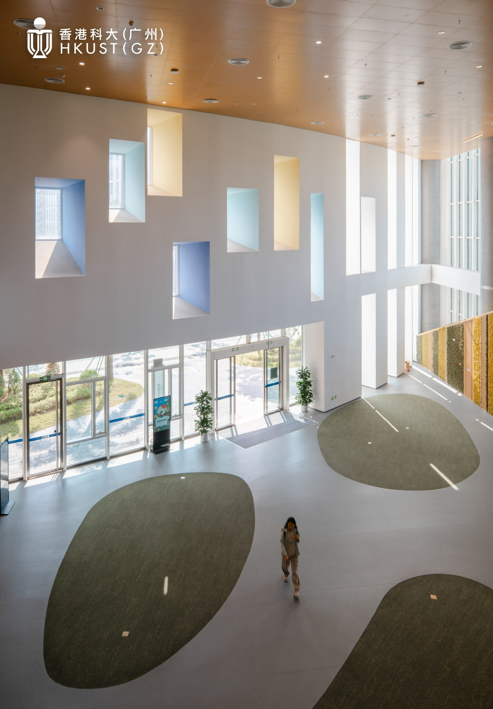
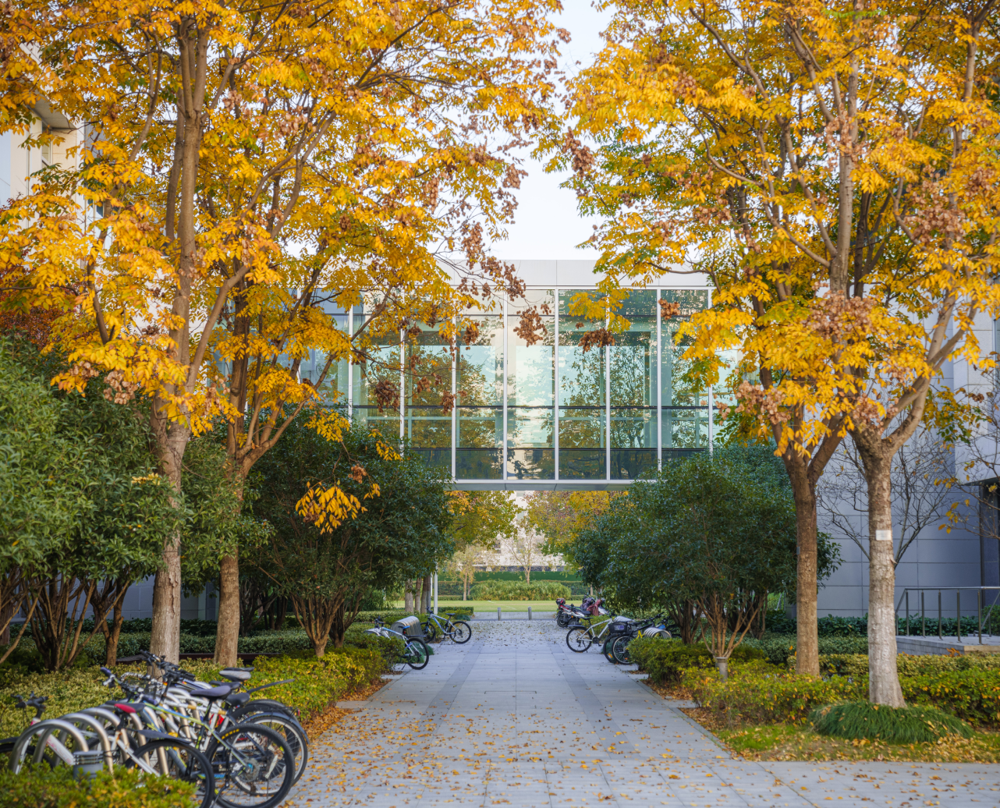

This workshop centers on intelligent gerontechnology for accessible living, exploring how intelligent systems and assisted mobility technologies can empower senior people in their everyday lives.
By bringing together academic experts in aging sciences and aging technology with industry partners, the workshop aims to define foundational challenges, research opportunities, and concrete action plans for the next generation of intelligent gerontechnology.


The workshop brings together participants from HKUST, HKUST(GZ), and beyond, including both academic and industry communities working on aging and technology.
The program combines keynote talks, panel discussions, and working group sessions to build a shared research and design agenda for intelligent gerontechnology.
Invited speakers include:
Participants will break into mixed academic–industry working groups to discuss key themes:
Informal networking and follow-up discussions among participants, providing space to deepen collaborations and share emerging ideas.
Each group presents its vision of how to move beyond simple “design recommendations” and define the fundamental research needed to develop and deploy intelligent technologies for accessible living.
Facilitators will synthesize insights into future cross-campus initiatives and academia–industry interfaces, aiming to create a dynamic, shared ecosystem for both talent and technology in the field of aging and accessibility.
The workshop will be hosted at HKUST in Hong Kong, with hybrid participation enabled via Zoom / Tencent Meeting. Detailed registration and logistics information will be circulated to invited participants and shared through ARK Lab channels.
For questions regarding the workshop, please reach out to ARK Lab at HKUST(GZ).